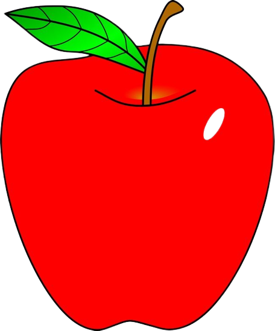

Discusses how I view teaching as a life-long journey
Physics is important
Physics encompasses the study of the universe, from the theory of the smallest to the mechanics of the largest. It is taught to all scientists and engineers, and it creates foundation for different fields of sciences. Simply put: physics is extremely important.
My teaching philosophy has matured. . .
My teaching philosophy has matured and changes over my years of study in the University of the Philippines Los Baños, always with an increasing emphasis on how I can impart knowledge to my students especially in an online setup so that they can learn more and how discussions can be applied outside of the four corners of a classroom. My teaching philosophy boils down to concentrate on accessibility of the teacher, focus on conceptual learning, emphasizing importance of students’ engagement, honing practical skills, and continuing evolution as a professional teacher.
Of course, most of students’ learning happens outside of class hours. This implies that properly designed performance task, assignments, and assessments are important and is a necessary component of the learning process, which includes strongly encouraging students to read before going to class and after going to class. Most importantly, I should be accessible to students by giving them frequent and timely office hours and email visibility to set and push the track of the students to the right way. Teacher’s accessibility includes making sure that all students, without discrimination and favoritism, are included in all learning activities.
Focusing on the conceptual thinking and understanding of Physics content is essential at all level. Students come into class with a multitude of misconceptions about how things work in concepts like force, motion, energies, and electricity. Heavy understanding of the concept first pays off to solving simple to complex problems which is essential to more advanced concepts later. A focus of understanding Physics conceptually will further help students to see how the world works so that they will come up with correct solution and fact-based answers to a real-world problem.
Inside and outside of teaching, I will always aim to maintain students’ engagement, interest, and motivation. Whether through physical or online interactive examples, peer instruction, or just mentioning a student by name to imply a query, I encourage my future students to think during Physics class time. My ideal classroom I envisioned is the one with full collaboration, with students actively taking part in class, and therefore setting an active role in their own learning process. That is what I will strive to: to let students become self-directed learners. Main reason includes the fact that I cannot force my students to learn, they are the only one who can push themselves to learn on their own pace.
Practical skills are also essential for students. Whether my students will pursue a major in Physics or not, it is apparent that practical skills such as the ability to write clearly on scientific matters, presenting complicated problems to peers, applying the mathematics to solve problems, measure things with appropriate equipment and calibration that includes accuracy and precision to gain a deeper understanding are necessary for any profession not just for aspiring physicist.
Ultimately, it is salient to give consideration to the bursary of learning and teaching. As I gain evolving insights about my students, I, too should strive to continue to learn and contribute to the bursary of teaching and learning to be a progressive and effective teacher in this fast-paced world.